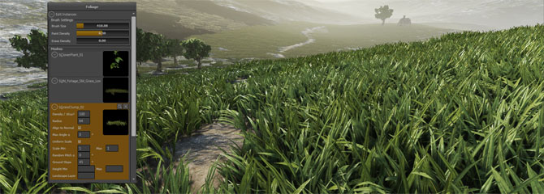
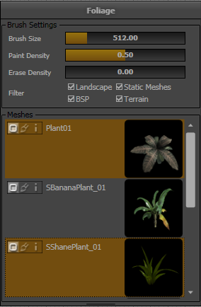
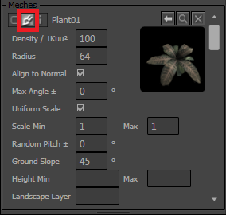
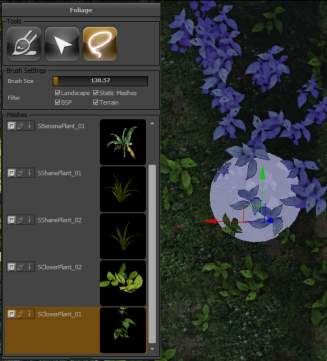

UDN
Search public documentation:
Foliage
日本語訳
中国翻译
한국어
Interested in the Unreal Engine?
Visit the Unreal Technology site.
Looking for jobs and company info?
Check out the Epic games site.
Questions about support via UDN?
Contact the UDN Staff
中国翻译
한국어
Interested in the Unreal Engine?
Visit the Unreal Technology site.
Looking for jobs and company info?
Check out the Epic games site.
Questions about support via UDN?
Contact the UDN Staff
UE3 Home > Foliage
Foliage

This document describes the new Instanced Foliage System and Edit Mode, which was first made available in the June 2011 QA Build and is currently under development.
Overview
Foliage Edit Mode
Mesh List
| This button replaces all instances of the mesh already placed in the current level with the Static Mesh that is currently selected in the content browser. | |
| This button removes the mesh from the mesh list as well as all instances of this mesh already placed in the current level. | |
| This button locates the Static Mesh in the Content Browser. |
Foliage Tools
| Paint tool, used for adding and removing foliage instances from the world. | |
| Reapply tool, used to change the parameters of instances already painted in the world. First available in the October 2011 build. | |
| Selection tool, used to select individual instances, for moving, deleting etc. First available in the September 2011 build. | |
| Paint Select tool, used to select many instances using the paint brush. First available in the September 2011 build. |
Paint Tool
Selected Meshes in the Mesh List
Meshes can be selected and deselected by clicking on them in the Mesh List (orange is selected). When painting in the editor viewport, only the selected meshes will be affected. Foliage instances of other static meshes already in the level will not be affected in any way, and no instances of the deselected Mesh List items will be added to the level. Below is an example of two meshes selected. The SBananaPlant_01 mesh will not be painted or erased from the level as it is not selected. Brush Settings
- Brush Size is the size of the brush in Unreal units.
- Paint Density is the target density at which you will add instances when using Ctrl.
- This is a value from 0 to 1 where 1 paints mesh instances at the maximum density listed in the Mesh Properties for each mesh (see below).
- If the density of meshes in the brush is already greater than this, no meshes will be added.
- Erase Density is the target density you would like to achieve when you erase instances using Ctrl+Shift.
- This is a value from 0 to 1 where 0 represents no meshes. If there are fewer meshes than this desired erase density, no more meshes will be erased.
- This allows you to thin out meshes already painted without completely removing all instances.
- Filter allows you to control what kinds of objects you want to place instances on.
- Note the foliage sphere brush will disappear when it is not over an object that matches the filter type.
- Also note that you can only paint on objects that are in the active streaming level.
Paint Settings
Each mesh in the Mesh List has a number of properties that control how instances are placed for this mesh when painting. The properties are accessible by pressing the middle paint brush icon. | Property | Description |
|---|---|
| Density / 1Kuu² | The number of instances that will be placed for this mesh, for each 1000x1000 unreal unit area |
| Radius | Minimum distance between instances of this mesh. (This setting did not function correctly before the October 2011 build) |
| Align to Normal | Whether or not the foliage mesh should be oriented vertically or follow the direction of the surface it's placed upon |
| Max Angle | If non-zero, this specifies the maximum angle to follow when aligning to the normal. For example, if ground is 30° slope, and you set the Max Angle to 10°, the foliage will try to follow the direction of the ground but it placed at 10° to the vertical. If you place an instance on 5° surface, the angle is less than 10° so the foliage will be oriented to match the 5° slope. |
| Uniform Scale | Whether or not you wish to scale instances' X,Y and Z scales independently. |
| Scale Min/Max | Instances will be randomly scaled between the minimum and maximum scale range. |
| Random Pitch ± | Adds variation up to ± the angle you specify, so the instances aren't all pointing exactly the same direction. |
| Ground Slope | If non-zero, if the surface you are painting on is steeper than this angle, no foliage instances will be placed. A negative value will place foliage instances only on surfaces steeper than the angle specified. |
| Height Min/Max | If specified, if the World space Z (height) value is outside this range, no instances will be applied. |
| Landscape Layer | if entered, foliage instances will be painted proportional in density to the Landscape layer specified, after all the other parameters have been applied. |
Reapply Tool
| Density Adjust | This is a density multiplier for existing instances. If you set the slider to 2.0, the number of instances in a particular area will be doubled. A value of 0.5 will leave only 50% of the instances remaining after painting. |
| Ground Slope | This will remove instances that do not meet the ground slope criteria. No new instances will be added. |
| Height Min/Max | This will remove instances that do not meet the height range criteria. No new instances will be added. |
| Landscape Layer | This will remove instances in proportion to the specified layer density. No new instances will be added. |
Selection Tool
When the selection tool is active, individual instances can be selected by clicking on them. Control-Click will multi-select. Once instances are selected, a number of actions are available:| Action | Result |
|---|---|
| Drag a widget axis | The selected instances will move following the widget, be rotated or scaled depending on the widget mode. |
| Alt + Drag a widget axis | The selected instances will be first duplicated and then will move following the widget |
| Delete key | The selected instances will be deleted |
| End key | The selected instances will attempt to snap to the floor. They will be aligned to the normal if originally placed with this setting enabled. |
Paint Selection Tool
The Paint Selection tool allows you to select a number of instances simultaneously by using the sphere brush that is also used with the Paint tool. The mesh list selection and filter settings apply, just as they do for regular mesh painting. Holding down Shift while painting deselects instances. Once you have a selection, you can switch to the regular Selection tool and perform some of the the actions listed above. Instance Settings Mode
| Property | Description |
|---|---|
| Instance Count | This shows the number of instances of this mesh currently placed in the current streaming level |
| Cluster Count | This shows the number of clusters used to render instances of this mesh in the current streaming level. Groups of instances are rendered together in a single draw call, called a cluster, to improve rendering efficiency. The cluster allocation is determined automatically based on the number of instances already in the cluster and the radius of the cluster in world space. The following two parameters can adjust this. |
| Instances Per Cluster | This sets the maximum number of instances per cluster. Remember that all the instances in a single cluster are always rendered in a single draw call with the total number of triangles equal to the polygons per mesh multiplied by the instances per cluster. The ideal number depends on the polygon count of the mesh. |
| Cluster Radius | This is the maximum size a cluster can grow before instances are allocated to a new cluster. Reducing this number increases the number of clusters but improves occlusion as the cluster has a smaller bounding box. |
| Cull Distance Start | This is the distance in world units at which the instances will begin to fade out. Note that this needs to be set up in the material. See the Culling section below. |
| Cull Distance End | This is the distance in world units at which the instances will be completely culled. If the material is not set up to fade individual instances, entire clusters will disappear and reappear together. See the Culling section below. |
Culling
Materials and Vertex Animation
Vertex animation for simulating effects such as wind can be achieved with an appropriate material such as the method described in the InteractiveFoliageActor document, but you need to make a small modification to your material to work correctly for instanced foliage. The Object World Position material node gives you the location of the InstancedFoliageActor in your level rather than the location of the individual instance. Instead of using Object World Position, use a Transform Position node transforming the constant 4-vector (0,0,0,1) from Local to World space. This will give the location of the individual instance in world coordinates.Static Mesh Settings
LOD
Static Mesh LOD is supported on foliage, beginning with the October 2011 build. There are a few caveats:- It is recommended you enable Screen Door Fading on your material.
- Note that light and shadowmaps are shared between all LOD levels, so all LODs need to use the same unwrapping.
- Currently the entire cluster of instances change LODs simultaneously. We may add support for distance-based fading per instance in the future.
Lighting
Each individual mesh instance has its own shadow and/or light map generated by Lightmass, and these are tiled together for each precomputed batch batch can support precomputed. There are several settings on the StaticMesh that should be checked for precomputed lighting to operate well with instanced foliage. Lightmass is less forgiving when generating shadow maps for instanced meshes, and incorrect settings could lead to black meshes after rebuilding lighting.- Light Map Coordinate Index - must be set to a valid UV channel that has a unique UV unwrapping. The Static Mesh Editor's "Generate Unique UVs" feature can quickly generate a unique unwrapping.
- Lightmap Resolution - this must be a small enough number so that all the shadow map for instances in a single cluster (by default 100) can be tiled together without exceeding the maximum texture resolution (4094x4096).